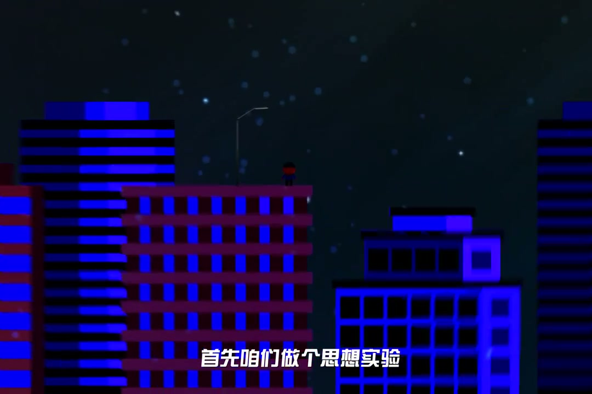
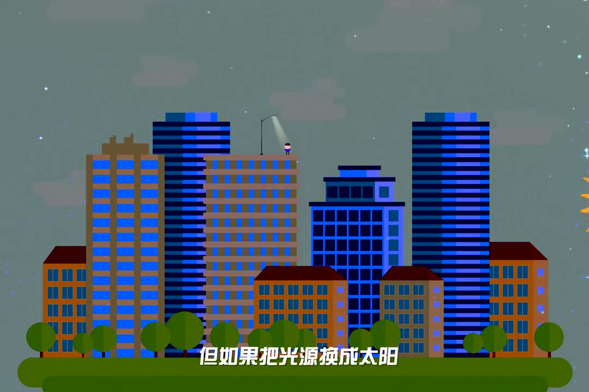
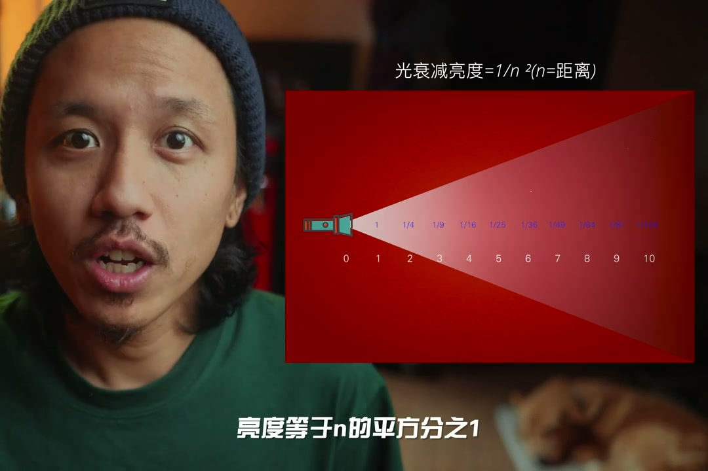
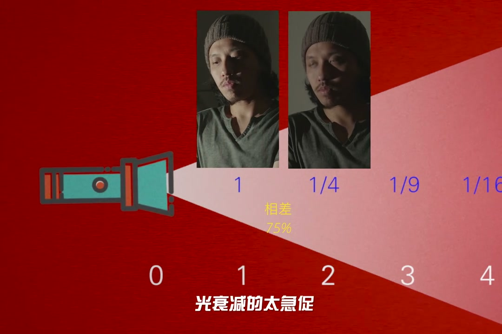

内容要点
[00:00] 我们很直观的认为光行走了一辈的距离
[00:02] 强度应当减弱一半
[00:04] 但是是光的传播衰减倍率
[00:06] 不是线性的
[00:06] 而是成几何事的
[00:08] 首先咱们做个思想实验
[00:10] 我们站在80楼
[00:11] 小帅上方有一盏灯
[00:13] 把小帅照亮
[00:14] 同时小美站在1楼
[00:16] 这盏灯几乎对小美起不到半点照明作用
[00:19] 但如果把光源换成太阳
[00:21] 太阳离我们超级无敌远
[00:23] 以至于在地球上
[00:24] 不管我们站在80楼还是1楼
[00:26] 小帅和小美被照的亮度几乎一致
[00:29] 大家看
[00:30] 光衰减的攻势是个反平方率
[00:32] 亮度等于n的平方分之一
[00:34] 距离增加一倍
[00:35] 光的亮度为原有的四分之一
[00:37] 增加两倍为原有的九分之一
[00:40] 但这个对于我们曝光有什么影响呢
[00:42] 其实影响非常大
[00:44] 大家有没有遇到过这样的情况
[00:45] 一盏灯打两个人物
[00:47] 一个人物面部曝光刚刚好
[00:49] 但另一个人物面部却曝光不足
[00:52] 问题处在光源离演员们太近了
[00:54] 两个人物之间
[00:55] 光衰减的太极处
[00:57] 越极处的衰减
[00:58] 也意味着明暗反差越大
[01:00] 在举个应用场景
[01:02] 我们拍摄口播的时候
[01:03] 光源离人物越近
[01:05] 那么背景的亮度衰减也越大
[01:07] 咱们如果把光源拉远
[01:09] 人物和背景的亮度差就会逐渐缩小
[01:12] 那么如果我们想要做到背景分离的效果
[01:14] 让照亮人物的同时
[01:15] 光源不要过分影响背景
[01:17] 就需要把光源尽可能往人物靠近
[01:20] 但反平方率
[01:22] 不完全适用于所有情况
[01:23] 特定的条件下它是会失效的
[01:26] 以后我们聊光志会继续研究
[01:28] 感谢收看这篇新闻摄影
[01:29] 我是老队
[01:29] 我们下次再见



